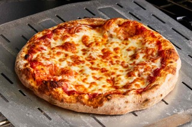

Pizza

Pizza Recipe
A dough shaped into a circular disc and covered with sauce and cheese and thrown into a stone oven
Ingredients:
- 1 ball of pizza dough
- All-purpose flour for dusting
- Semolina flour for dusting
- ¼ cup basic pizza sauce
- 3 ounces shredded low-moisture mozzarella
Steps:
- Roll out the dough: if you’ve let the dough rise, give it a quick knead, then split into two balls. On a floured surface, roll out the dough into large rounds, about 25cm across, using a rolling pin. The dough needs to be very thin as it will rise in the oven. Lift the rounds onto two floured baking sheets.
- Top and bake: heat the oven to 240C/220C fan/gas 8. Put another baking sheet or an upturned baking tray in the oven on the top shelf. Smooth sauce over bases with the back of a spoon. Scatter with cheese and tomatoes, drizzle with olive oil and season. Put one pizza, still on its baking sheet, on top of the preheated sheet or tray. Bake for 8-10 mins until crisp.
- Serve after resting for a few minutes